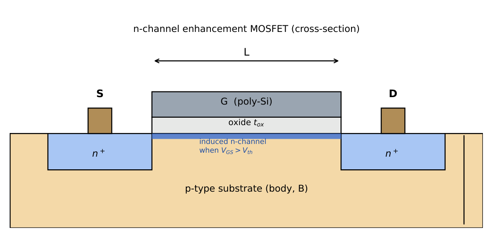
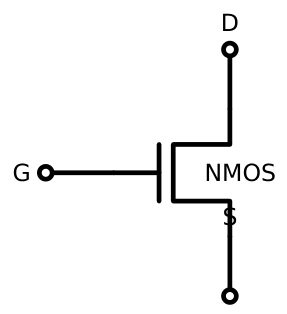
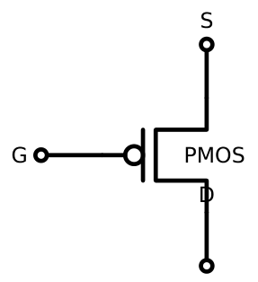
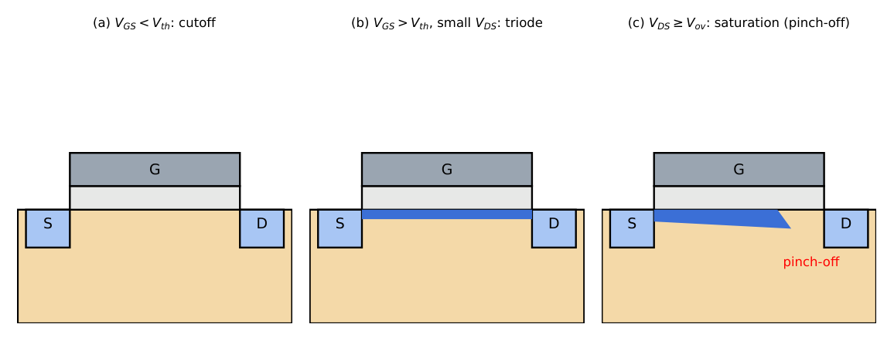
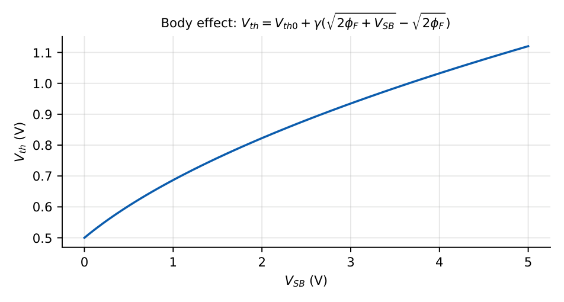
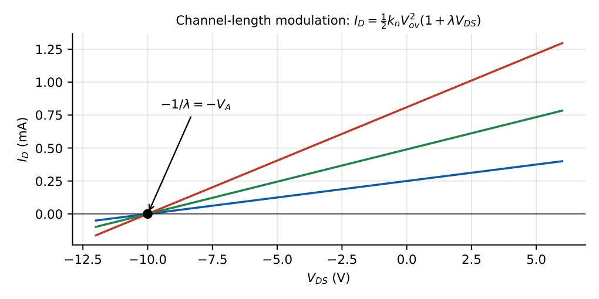
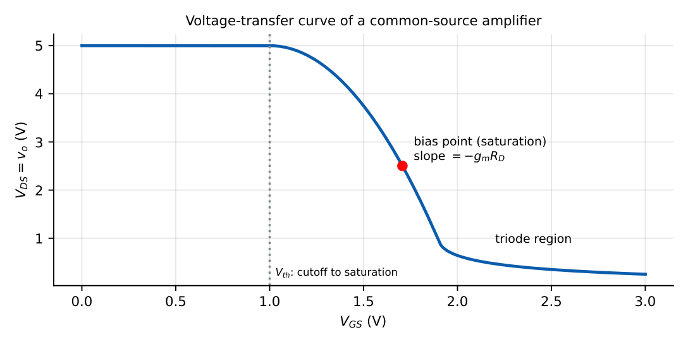

MOSFET Fundamentals
In this chapter
12.1 MOS structure
A MOSFET has four terminals: gate (G), drain (D), source (S) and body (B). A metal or polysilicon gate sits on a thin oxide (thickness \(t_{ox}\)) over a semiconductor substrate. The gate is insulated from the channel, so the DC gate current is zero, the reason MOSFET amplifiers have very high input resistance.

Oxide capacitance per unit area: \(C_{ox}=\varepsilon_{ox}/t_{ox}\)
Process transconductance parameter: \(k_n'=\mu_nC_{ox}\) (typical \(100\)–\(400\ \mu\)A/V\({}^2\))
Device transconductance parameter: \(k_n=k_n'\dfrac WL\)
12.2 Enhancement and depletion MOSFETs
- Enhancement-mode: no channel exists at \(V_{GS}=0\). A positive \(V_{GS}>V_{th}\) (NMOS) induces an inversion channel. Normally OFF.
- Depletion-mode: a channel exists at \(V_{GS}=0\) (implanted). A negative \(V_{GS}\) (NMOS) depletes the channel until it pinches off at \(V_{GS}=V_{th}<0\) (called \(V_P\)). Normally ON.
12.3 NMOS and PMOS


| NMOS (enhancement) | PMOS (enhancement) | |
|---|---|---|
| Substrate | p-type | n-type |
| Carriers | electrons | holes |
| \(V_{th}\) | \(>0\) | \(<0\) |
| ON condition | \(V_{GS}>V_{th}\) | \(V_{GS}<V_{th}\) (\(V_{SG}>|V_{th}|\)) |
| Current direction | drain \(\to\) source | source \(\to\) drain |
| Relative \(k'\) | \(\mu_n\approx2\text{--}3\mu_p\) (NMOS stronger) | weaker |
For PMOS use the same equations with \(V_{SG}\), \(V_{SD}\), \(|V_{th}|\) and \(\mu_p\).
12.4 MOSFET operating regions
Define the overdrive voltage \(V_{ov}=V_{GS}-V_{th}\).

| Region | Condition (NMOS) | Drain current |
|---|---|---|
| Cutoff | \(V_{GS}<V_{th}\) | \(I_D=0\) |
| Triode (linear) | \(V_{GS}>V_{th}\), \(V_{DS}<V_{ov}\) | \(I_D=k_n\!\left[V_{ov}V_{DS}-\tfrac12V_{DS}^2\right]\) |
| Saturation | \(V_{GS}>V_{th}\), \(V_{DS}\ge V_{ov}\) | \(I_D=\tfrac12k_nV_{ov}^2(1+\lambda V_{DS})\) |
For small \(V_{DS}\) in triode the device is a voltage-controlled resistor \(r_{DS}=1/(k_nV_{ov})\).
\(k_n'=200\ \mu\)A/V\({}^2\), \(W/L=10\) (\(k_n=2\) mA/V\({}^2\)), \(V_{th}=0.5\) V, \(V_{GS}=1\) V (\(V_{ov}=0.5\) V).
Saturation (\(V_{DS}\ge0.5\) V, take \(V_{DS}=1.5\) V, \(\lambda=0\)): \(I_D=\tfrac12\times2\,\mathrm m\times0.25=0.25\) mA.
Triode at \(V_{DS}=0.2\) V: \(I_D=2\,\mathrm m[0.5\times0.2-0.02]=0.16\) mA.
On-resistance at small \(V_{DS}\): \(r_{DS}=1/(2\,\mathrm m\times0.5)=1\) k\(\Omega\).
Region test in one line: compare \(V_{DS}\) with \(V_{GS}-V_{th}\). For a PMOS use magnitudes. For a diode-connected MOSFET (\(V_{GS}=V_{DS}\)) it is always in saturation (when ON) because \(V_{DS}=V_{GS}>V_{GS}-V_{th}\).
12.5 Drain characteristics

The locus \(V_{DS}=V_{GS}-V_{th}\) where the saturation and triode curves meet is \(I_D=\tfrac12k_nV_{DS}^2\) (the dashed parabola).
12.6 Transfer characteristics
Enhancement: \(I_D=\tfrac12k_n(V_{GS}-V_{th})^2\) for \(V_{GS}>V_{th}\). Depletion (or JFET): \(I_D=I_{DSS}\left(1-\dfrac{V_{GS}}{V_P}\right)^2\) with \(I_{DSS}\) the current at \(V_{GS}=0\).
12.7 Threshold voltage
\(V_{th}=V_{FB}+2\phi_F+\dfrac{\sqrt{2q\varepsilon_{Si}N_A(2\phi_F)}}{C_{ox}}\) with \(\phi_F=V_T\ln\dfrac{N_A}{n_i}\)
\(V_{th}\) is raised by heavier doping and thicker oxide; it is adjusted by ion implantation. Temperature coefficient \(\approx-2\) mV/\({}^\circ\)C.
12.8 Body effect
If the source-to-body voltage \(V_{SB}\ne0\) (for NMOS \(V_{SB}>0\)) the threshold rises: \[V_{th}=V_{th0}+\gamma\left(\sqrt{2\phi_F+V_{SB}}-\sqrt{2\phi_F}\right),\qquad\gamma=\frac{\sqrt{2q\varepsilon_{Si}N_A}}{C_{ox}}.\]

\(V_{th0}=0.5\) V, \(\gamma=0.4\ \mathrm{V^{1/2}}\), \(2\phi_F=0.7\) V, \(V_{SB}=1\) V: \(V_{th}=0.5+0.4(\sqrt{1.7}-\sqrt{0.7})=0.5+0.4(1.304-0.837)=0.687\) V.
Body effect matters when the source is not at the same potential as the body: source followers, cascodes, and stacked transistors. In a common-source amplifier with \(S\) tied to \(B\) (or grounded), \(V_{SB}=0\) and there is no body effect.
12.9 Channel-length modulation
When \(V_{DS}\) rises beyond \(V_{ov}\), the pinch-off point moves toward the source, shortening the effective channel: \(I_D\propto1/L_{eff}\). Approximately \[I_D=\tfrac12k_nV_{ov}^2(1+\lambda V_{DS}),\qquad r_o=\frac{1}{\lambda I_D}=\frac{V_A}{I_D},\ V_A=\frac1\lambda\propto L.\]

\(\lambda=0.1\) V\({}^{-1}\). \(I_D\) at \(V_{DS}=2\) V compared with \(1\) V: ratio \(=(1+0.2)/(1+0.1)=1.09\); \(r_o=1/(0.1\times250\,\mu\mathrm A)=40\) k\(\Omega\) at \(I_D=0.25\) mA.
Longer channels have smaller \(\lambda\) (larger \(r_o\)): analogue designers use \(L\) larger than minimum.
12.10 MOSFET as an amplifier
Biased in saturation, a small change in \(V_{GS}\) produces a change in \(I_D=\tfrac12k_nV_{ov}^2\), converted to a voltage by \(R_D\).

In the saturation portion the incremental gain is \(dV_o/dV_{GS}=-g_mR_D\), where \(g_m=k_nV_{ov}=2I_D/V_{ov}\) (Chapter 14).
12.11 GATE-oriented MOSFET analysis
1. Compute \(V_{GS}\) (gate voltage minus source voltage). If \(V_{GS}<V_{th}\): cutoff, \(I_D=0\).
2. Assume saturation: \(I_D=\tfrac12k_n(V_{GS}-V_{th})^2\).
3. Find \(V_{DS}\) from the drain-source loop; if \(V_{DS}<V_{GS}-V_{th}\) the assumption fails: use the triode formula.
(1) Some texts define \(K=\tfrac12\mu C_{ox}W/L\) so that \(I_D=K(V_{GS}-V_{th})^2\); read the problem’s definition. (2) When solving a source-degenerated circuit you get a quadratic: always discard the root with \(V_{GS}<V_{th}\). (3) For PMOS, apply the signs carefully: \(V_{SG}>|V_{th}|\) means ON.
Q1. An NMOS has \(k_n=1\) mA/V\({}^2\), \(V_{th}=1\) V, \(V_{GS}=3\) V, \(V_{DS}=5\) V, \(\lambda=0\). \(I_D\) (mA) is .
Q2. With the same device, \(V_{GS}=3\) V and \(V_{DS}=1\) V. The region and \(I_D\) are: (A) saturation, 2 mA (B) triode, 1.5 mA (C) triode, 1 mA (D) cutoff, 0.
Q3. The threshold voltage of an NMOS increases when (A) \(V_{SB}\) increases (B) \(V_{SB}\) decreases (C) \(V_{GS}\) increases (D) \(V_{DS}\) increases.
Q4. Channel-length modulation with \(\lambda=0.05\) V\({}^{-1}\) and \(I_D=0.5\) mA gives \(r_o=\) k\(\Omega\).
Q5. A diode-connected NMOS (\(V_{GS}=V_{DS}\)) with \(V_{th}=1\) V carries current when \(V_{GS}=1.5\) V. It is in (A) cutoff (B) triode (C) saturation (D) breakdown.
Answers: Q1: \(\tfrac12\times1\times(2)^2=2\) mA. Q2: \(V_{ov}=2\) V, \(V_{DS}=1<2\): triode, \(I_D=1[2\times1-0.5]=1.5\) mA (B). Q3: (A). Q4: \(1/(0.05\times0.5\,\mathrm m)=40\) k\(\Omega\). Q5: (C).
- PMOS, \(|V_{th}|=0.8\) V, \(k_p=0.5\) mA/V\({}^2\), \(V_{SG}=2\) V, \(V_{SD}=3\) V: \(I_D\)? [0.36 mA]
- \(C_{ox}=8\) fF/\(\mu\)m\({}^2\), \(\mu_n=400\) cm\({}^2\)/V s. Compute \(k_n'\). [\(\approx320\ \mu\)A/V\({}^2\)]
- Depletion NMOS \(I_{DSS}=6\) mA, \(V_P=-3\) V, \(V_{GS}=-1\) V: \(I_D\)? [2.67 mA]
- Calculate \(V_{th}\) if \(V_{th0}=0.6\), \(\gamma=0.3\), \(2\phi_F=0.8\), \(V_{SB}=2\). [0.83 V]